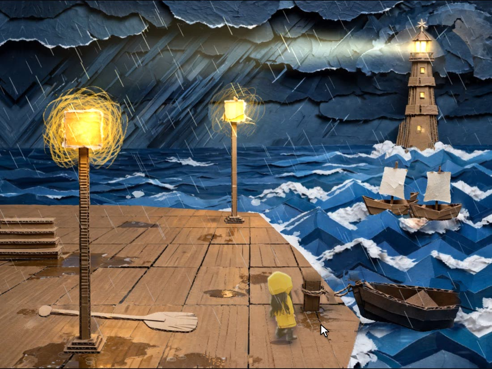
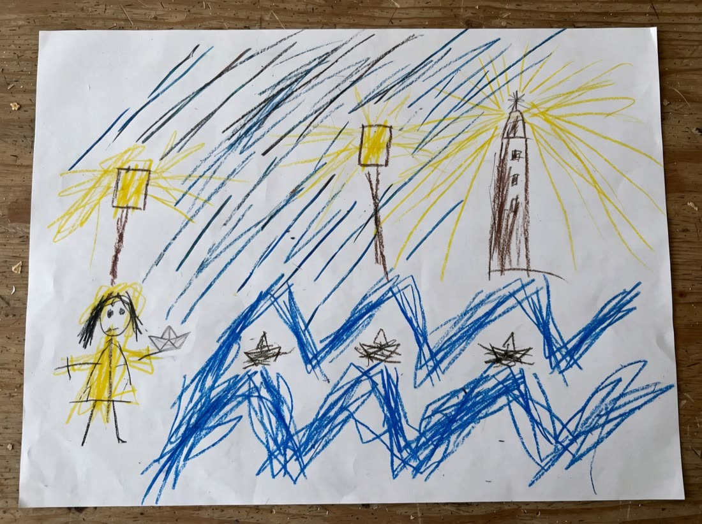
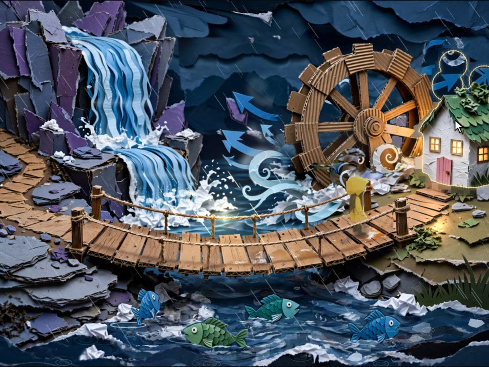
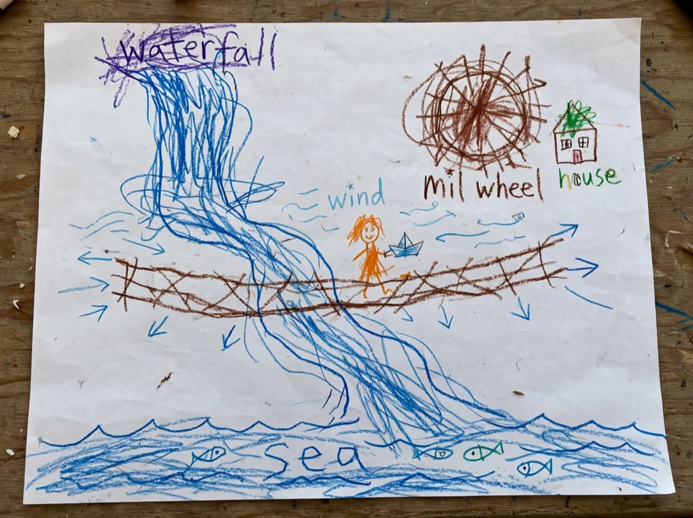
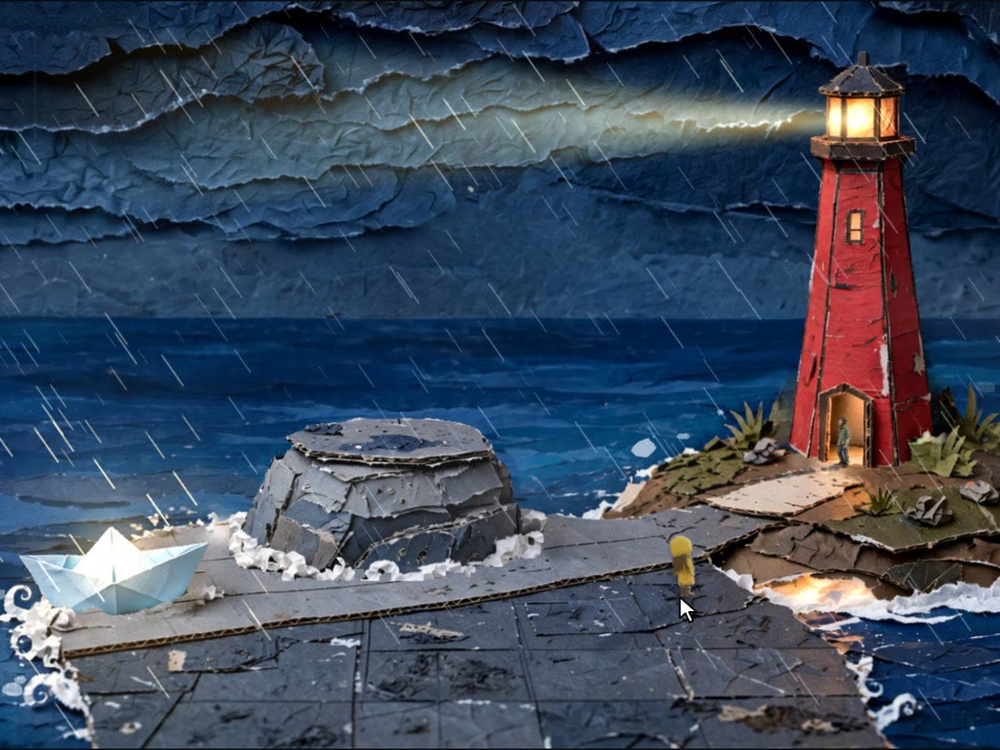
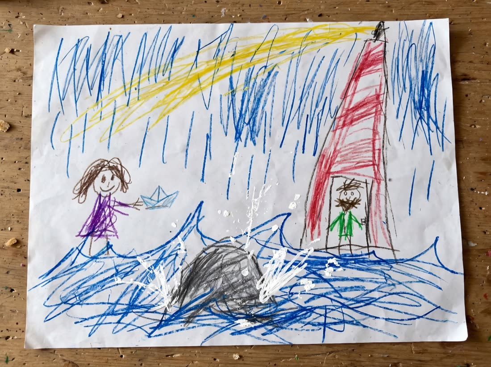
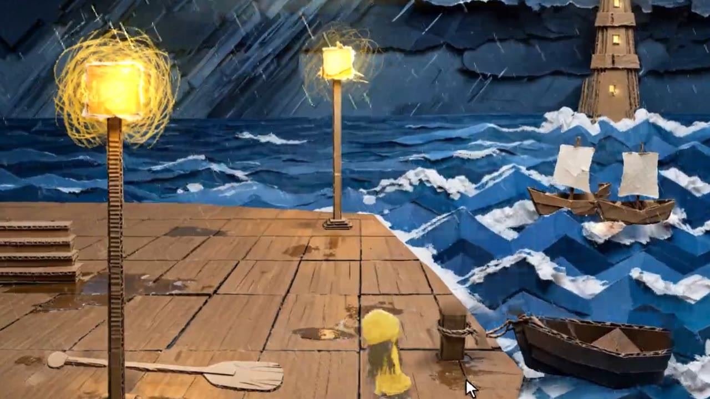

Diorama turns a sketch or a single sentence into a small paper diorama world you can play in the browser.
Scroll, and the painting comes apartOne paintingMuse Image painted this quay from a crayon sketch.
SAM 3.1 · depthSAM cuts it into paper cards. A depth map stands each card at its own distance.
A stageNow a hero can walk in, behind the lamp post and in front of the boat.
Paper Boat StormThree sketches, one paragraph, one playable world. Play it
Drag across each picture. On the left, the crayon sketch Diorama got as input. On the right, the place it built and you can walk in. Muse Spark reads what is on the sheet, plans the place around it, and Muse Image paints it in cut paper and cardboard.


sketchworldLamp posts become glowing paper lamps, the zigzag waves become folded paper sea, and the three little boats bob on it.


sketchworldEven the misspelt “mil wheel” made it. The rope bridge is walkable, the waterfall pours, and every fish is its own cut-out that swims.


sketchworldThe keeper waits in the doorway, as drawn. The yellow crayon beam is now a real beam that sweeps over the storm.
Not a flat pictureEvery place arrives in pieces…
Cards, flats, water…and folds into a stage: the waterfall, the mill wheel, the rope bridge.
AliveEvery fish is its own cut-out that swims. The water flows, the clouds drift.
The last placeIt pops up like a page in a book.
As drawnThe keeper waits in the lighthouse door, just where the sketch had him.
The endingThe girl brings him the paper boat. The beam sweeps over the storm.
Models do the creative work. Code measures and checks every result, so what comes out can be played, not only looked at. Each step writes plain files, and a typical four-place world takes about 17 minutes and some 200 Meta model calls.
Places, a cast, items, locks and endings, with every ending checked to be reachable.
A shaded plan sketch for each place, painted over by Muse. A critic marks what is wrong and only those regions get repainted.
Every thing and floor cut out of the painting. Things the hero can take are painted out of a clean plate.
Floor, scale, occlusion, stairs and light measured from masks and depth. Cards, far flats, water, rain.
The hero and characters painted, cut out, turned into 3D models and drawn back as sprites in the world's style.
Ambience, footsteps, music, and a fitting voice for every character.
Every place is walked and used by a bot. A place that fails is repaired automatically or handed to the agent.
Designs the world and story, reads the sketches, lays out each place, critiques paintings, names what to cut out, judges playthroughs.
Paints each place over its plan sketch, repaints flagged regions, paints the cast, their walk and talk sheets, and the item icons.
Cuts the painting into things, floors, stairs and water. The masks become the walk grid, occlusion and pick-ups.
Hears an idea said aloud, and listens to every voiced line to catch a take that does not say it.
The Studio's agent. Click a thing on the stage, say what should change, and it fixes the world with you.
Also used: Depth Anything V2 for shadows and parallax, ElevenLabs for voices and effects, MusicGen for music, TRELLIS for the characters' 3D models.
Here is the whole world in motion, 47 seconds of it, cut from the game itself.
and the paper boat made it ↘
Worlds built with Diorama, playable in the browser on a computer or a phone. Click to walk, click things to look, take and use them, talk to people.

Send a sketch or a story on X and I'll build it with Diorama. New worlds land on this shelf.
Send it on XDiorama runs on your computer: a command-line tool and a Studio app in the browser. You need Node 22+, ffmpeg and a Meta Model API key. ElevenLabs (sound) and Hugging Face (3D characters) keys are optional.
In an empty folder. Nothing to clone or install: it checks this machine and asks for your keys, typed hidden and stored encrypted.
mkdir my-worlds && cd my-worlds
npx -y @gtanczyk/diorama setupDescribe a world in one sentence or drop in your sketches, watch it build place by place, then play it and fix what you want with the agent.
npx -y @gtanczyk/diorama studioExport the world as a static web page for GitHub Pages, itch.io or any host. Your worlds are saved in ./worlds.
npx -y @gtanczyk/diorama export <world>About the sketches. No child drew the three storm sketches. They were generated with Muse Image to look like crayon drawings, then given to Diorama as input together with one paragraph of story. After the build, a few spots in the world were touched up by hand for the clip.
About the project. Diorama was written during the Meta AI Global Hackathon, from the kickoff on 26 October 2026. It runs locally as a command-line tool and a Studio app, and exports each world as a static web page.